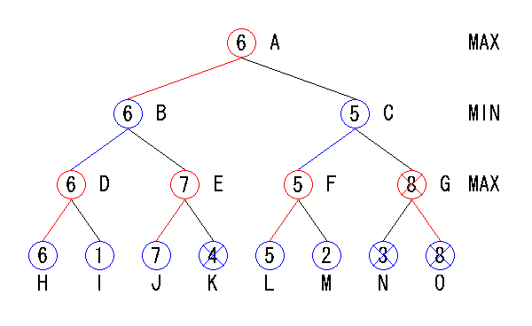

| 2.5 αβ法 |
αβ法とは、MinMax法を改良したアルゴリズムです。
MinMax法と比較して探索ノード数を大幅に減らし、かつMinMax法と同じ結果を得られるという特徴があります。
下図はMinMax法の説明に使用した図ですが、ノードに名前をつけています。
またいくつかのノードにX印がついています。
このX印は何を意味しているのでしょうか。

αβ法による探索
各ノードで、左の子ノードを先に探索すると仮定します。
するとＪの評価を行った段階で、Ｋの評価を行う必要がなくなります。
この理由は以下の通りです。
Ｊを評価したときには評価値６という上限によって探索が打ち切られています。
これをβカットと呼びます。
同様の理由によりＧ以下のノードも評価の必要がなくなります。
Ｆを評価したときには評価値６という下限によって探索が打ち切られています。
これをαカットと呼びます。
αカットとβカットを行うことで、探索ノードを減らすことができます。
これが、αβ法の探索ノード数がMinMaxと比較して少ない理由です。
またαβ法には、αとβの範囲にある手だけを選択するという特徴もあります。
このように上限と下限を設けて探索を行う手法をWindow探索と呼びます。
上記の例では自分の手番で評価値最大化、相手の手番で評価値最小化を行っていますが、
NegaMax法と同様に、各ノードで評価値最大化をすればよいように改良することもできます。
実際にはこの改良版を使用します。
それではαβ法の実装をしましょう。
static int Com_EndSearch(Com *self, int in_depth, int in_alpha, int in_beta, int in_color, int in_opponent, int in_pass, int *out_move)
{
int x, y;
int value, max = in_alpha;
int can_move = 0;
int move;
if (in_depth == 0) {
self->Node++;
return Board_CountDisks(self->Board, in_color) - Board_CountDisks(self->Board, in_opponent);
}
*out_move = NOMOVE;
for (x = 0; x < BOARD_SIZE; x++) {
for (y = 0; y < BOARD_SIZE; y++) {
if (Board_Flip(self->Board, in_color, Board_Pos(x, y))) {
if (!can_move) {
*out_move = Board_Pos(x, y);
can_move = 1;
}
value = -Com_EndSearch(self, in_depth-1, -in_beta, -max, in_opponent, in_color, 0, &move);
Board_Unflip(self->Board);
if (value > max) {
max = value;
*out_move = Board_Pos(x, y);
if (max >= in_beta) {
return in_beta;
}
}
}
}
}
if (!can_move) {
if (in_pass) {
*out_move = NOMOVE;
self->Node++;
max = Board_CountDisks(self->Board, in_color) - Board_CountDisks(self->Board, in_opponent);
} else {
*out_move = PASS;
max = -Com_EndSearch(self, in_depth, -in_beta, -max, in_opponent, in_color, 1, &move);
}
}
return max;
}
引数は以下の通りです。
NegaMax法と異なるのは、α値とβ値が加わっている点です。
self : Comクラスへのポインタ
in_depth : 探索の手数（Com_EndSearch()の場合は空きマスの数と一致する）
in_alpha : α値（探索の下限）
in_beta : β値（探索の上限）
in_color : 自分の手番
in_opponent : 相手の手番
in_pass : 直前の手がパスなら1、パスでなければ0
*out_move : 選択した手を格納しておく。
処理はNegaMax法の場合とほぼ同じですが、評価値がβ値以上になったときに探索を打ち切る（βカット）点が違います。
それではαβ法で探索を行うプログラムと対局を行ってみましょう。
main()を実行するとコンピュータと対局を行います。
NegaMax法の場合と同じ手を選ぶようになっていますが、思考時間が大幅に減っているはずです。
コンピュータ思考時に探索時間、探索ノード数が表示されるので確認してください。